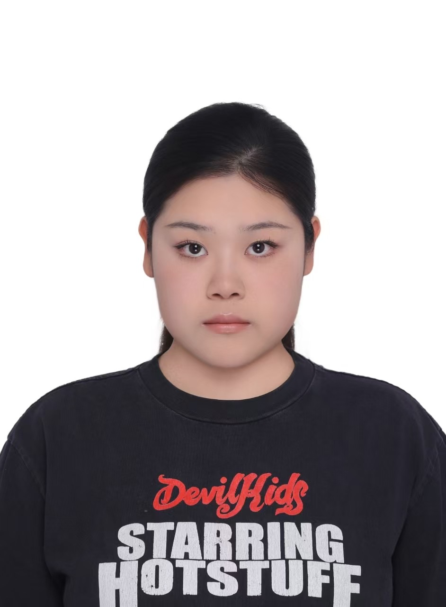

About Me
你好，我是 Lynn Liu，一名视觉设计师与交互艺术创作者。我专注于探索空间、光影与数字技术交互的可能性，通过视觉实验、互动装置和影像作品，表达对环境和体验的思考。
我喜欢将自然元素与人造元素结合，探索感官与数据、现实与虚拟之间的关系。在我的创作中，每个项目都是一次实验和叙事尝试。
我的作品涉及：视觉实验、交互装置、影像制作、3D动画及概念设计等领域。
联系方式: lynn@example.com

你好，我是 Lynn Liu，一名视觉设计师与交互艺术创作者。我专注于探索空间、光影与数字技术交互的可能性，通过视觉实验、互动装置和影像作品，表达对环境和体验的思考。
我喜欢将自然元素与人造元素结合，探索感官与数据、现实与虚拟之间的关系。在我的创作中，每个项目都是一次实验和叙事尝试。
我的作品涉及：视觉实验、交互装置、影像制作、3D动画及概念设计等领域。
联系方式: lynn@example.com